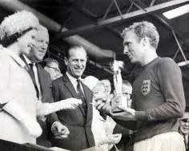
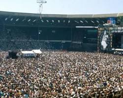
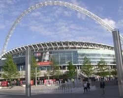

Events
|

Wembley Stadium witnessed a historic moment in 1966 when England secured its only FIFA World Cup title. The thrilling final against West Germany ended 4-2 after extra time, sparking national celebration in England. |

In 1985, Wembley Stadium hosted the legendary Live Aid concert, organized by Sir Bob Geldof to raise funds for famine relief in Ethiopia. The star-studded event featured iconic performances from Queen, U2, David Bowie, and many more, raising millions of dollars for the cause. |

Throughout its history, Wembley Stadium has been the stage for countless dramatic FA Cup finals, the pinnacle of English knockout football competition. These matches often see passionate rivalries clash, creating unforgettable moments in English football history. |